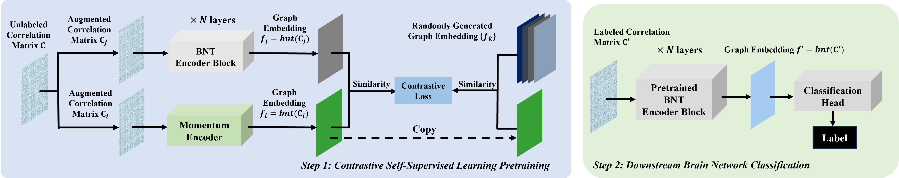

IEEE ISBI 2025Oral
Self-supervised Graph Transformer with Contrastive Learning for Brain Connectivity Analysis towards Improving Autism Detection
A brain-network transformer pre-trained with contrastive learning over randomly altered connectivity graphs, reaching 82.6 AUROC and 74% accuracy on ABIDE autism detection.